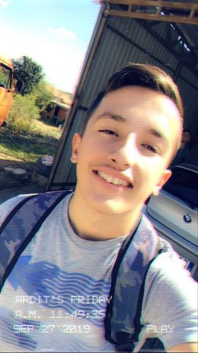

Hi I'm Ardit Shillova I'm 18 years old I'm from Prishtina.
I finished elementary and hight school in Prishtina,
now I'm studing Cumputer
Science in Universum College . I chose this course because i like
to learn how to code
,how can i develop a WebPage, a Game or anything
else about programing.
In primary school I was in the school "Mitrush Kuteli" in Matiqan for 9 years, this
was the place where I started to learn new things, during these 9 years I participated in sports competitions, knowledge
competitions, one of the competitions that is worth mentioning is the competition of Lego Robot where my school took
third place. With this race I completed the elementary school adventure by continuing one step higher in high school.
In high school I was in the school "7 Shtatori" in Pristina where for 3 years I studied for trade,
but during
the study I started the greatest interest in programming where at this time I decided to study computer science.
In the second year of study during in school testing I took first place for both computer science and geography,
but the third year was more difficult because in the world started the epidemic and disables
the physical study where we were forced to hold lessons through the virtual world tool
and so end my journey in high school continuing at Universum College in a completely different
direction from that of high school,in computer science. This was a short autobiography about me. A.SH
|  | ||||
|---|---|---|---|---|
| Year | Height | Weight | Education | BirthDate | 1.67m | 70Kg | Elementary,Hight and College soon | June/08/2002 |